Chapter 2 Simple Linear Regression
2.1 Motivation
In the search for structure between variables, is one of the most commonly used approaches.
Regression is defined in the 1 on-line dictionary as follows:
is:
simple – using just a single variable to predict another variable
linear – a linear relationship is assumed between the two variables under consideration
It is relevant when we have a response variable \(Y\) (also called the dependent variable or the predicted variable) which depends linearly on an explanatory variable \(x\) (also called a predictor variable, covariate or independent variable).
In linear regression,
x is considered as a vector of measured values which we know correctly
Y is considered as having a random distribution
Examples of relationship which could be investigated using simple linear regression are listed in Table .
The standard linear regression model is of the form: \[\begin{equation} Y = \ \alpha + \ \beta x + \ \varepsilon \end{equation}\]
where:
\(Y\) is the response variable
\(x\) is the explanatory variable
\(\alpha\) is the intercept
\(\beta\) is the slope
\(\varepsilon\) is an error term
The intercept \(\alpha\) can be zero or non-zero. The slope \(\beta\) can be positive (i.e. the predicted variable tends to increase as the predictor variable increases), negative, or zero. In the next sections we consider:
How to measure the strength of the (linear) relationship between \(x\) and \(Y\)
How to fit such a model to data – i.e. how do we find estimates of \(\alpha\), \(\beta\) and the error term \(\varepsilon\) ?
How to predict additional values of \(Y\) for given values of \(x\)
How to examine whether the simple linear regression model is appropriate for the particular data set we are investigating.
2.2 Assessing the linear relationship: Pearson’s correlation coefficient
A convenient measure to quantify the strength of the linear relationship between \(x\) and \(Y\) is the Pearson’s correlation coefficient, generally indicated as \(\rho\). The coefficient varies between \(-1\) and \(1\): a value of \(\rho = -1\) indicate a perfect negative correlation, which means that for increasing values of \(x\) we are certain that the values of \(Y\) will be diminishing. Inversely, when \(\rho = 1\) there is a perfect positive correlation: increasing values of \(x\) would correspond to increasing values of \(Y\). Finally, when \(\rho = 0\), \(x\) and \(Y\) are independent, and knowing something about the value of \(x\) gives no information on the possible values of \(Y\).
Since \(\rho\) gives an indication of the strength of the relationship between two variables we have that \(\rho(x,y) = \rho(y,x)\). The coefficient simply gives an indication of how much one variable can be related to the other one, it does not give an indication on causality (correlation does not imply causation).
For two samples \(x = (x_1, \ldots, x_n)\) and \(y = (y_1, \ldots, y_n)\), the correlation coefficient is estimated as \[r = \frac{\sum_{i=1}^n (x_i - \bar{x}) (y_i - \bar{y}) }{\sqrt{ \sum_{i=1}^n (x_i - \bar{x})^2 \sum_{i=1}^n (y_i - \bar{y})^2}} \]
A statistical test to assess whether a significant linear relationship exists between \(x\) and \(y\) can be performed by testing whether \[H_0 : \rho = 0 \quad \text{vs.} \quad H_1 : \rho \neq 0 \]
The test statistic to be used is \[ t_{obs} = \frac{r \sqrt{(n-2)}}{\sqrt{1-r^2}} \]
and it can be shown that under the null hypothesis the test-statistic follows a \(t\)-distribution with \(n-2\) degrees of freedom (\(t_{n-2}\)). For a confidence level of \(1-\alpha\), we would typically reject \(H_0\) when \(t_{obs}\) is large, i.e when \(t_{obs} > t_{1-\alpha/2, n-2}\) or \(t_{obs} < t_{\alpha/2, n-2}\).
Note that the significance of the correlation can only be assessed between any pair of variables: this will be less useful for multiple linear regression. Also, if the relationship between \(x\) and \(Y\) is not linear, the correlation between the two variables might show as not significant: it is always a good idea to plot the data to assess whether a linear relationship is appropriate.
In there is a built-in cor function which can be used on single as well as multiple variables.
2.3 Fitting and testing
2.3.1 Estimating regression coefficients – Theory
Let us assume we have \(n\) pairs of points \(\{(x_{i},y_{i})\}_{i = 1}^{n}\), and that the initial plot of \(Y\) against \(x\) suggests a linear relationship between the two variables (we will examine this assumption later).
We assume that the \(\left\{ Y_{i} \right\}\) are:
mutually independent: i.e. the value of \(Y_{j}\) is independent of \(Y_{k}\) for all \(j,k = 1,\ldots,n\ j \neq k\)
normally distributed with mean \(\alpha + \ \beta x_{i}\) and variance \(\sigma^{2}\) i.e.
\[\begin{equation} Y_{i}\sim\ N(\alpha + \ \beta x_{i},\ \sigma^{2}) \label{eq:linRegStatement} \end{equation}\]
What rationale should we use to choose the “best” estimators \(\hat{\alpha}\) and \(\hat{\beta}\) for \(\alpha\) and \(\beta\)? Figure 2.1 shows sample data points \(\left\{ (x_{i}, y_{i}) |\ i = 1,\ldots, n \right\}\) and a regression line \(\alpha + \ \beta x\).
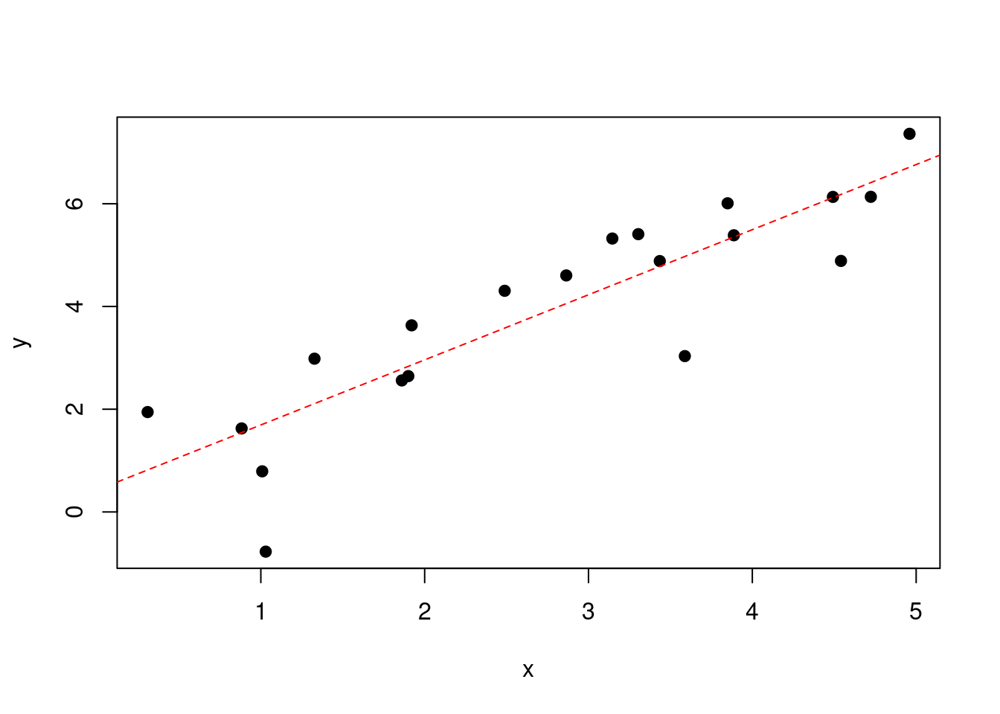
Figure 2.1: Data points and an estimated simple linear regression line.
One method (there are others!) is to minimise the total distance between all of the data points and the regression line. To take account of differences above the line and below the line, we choose \(\hat{\alpha}\) and \(\hat{\beta}\) to minimise the sum of squared differences: \[\begin{equation} S(\alpha,\beta) = \ \sum_{i = 1}^{n}{(y_{i} - (\alpha + \beta x_{i}))^{2}} \label{eq:lsobj} \end{equation}\]
This method is called the .
To find the values of \(\alpha\) and \(\beta\) which minimise \(S\) (i.e. \(\hat{\alpha}\) and \(\hat{\beta}\)), we differentiate \(S\) with respect to \(\alpha\) and \(\beta\) and find values which make \(\frac{\partial S}{\partial\alpha}\) and\(\ \frac{\partial S}{\partial\beta}\) equal to 0. Firstly, \[\begin{equation} \frac{\partial S}{\partial \alpha }= \ \sum_{i = 1}^{n}{2(y_{i} - (\alpha + \beta x_{i})\ {)( - 1)}^{}} \label{eq:leastSquares_a} \end{equation}\]
which equals 0 when \[\begin{equation*} \sum_{i = 1}^{n}{(y_{i} - ( \alpha + \beta x_{i})) = 0\ } \end{equation*}\]
i.e. when \[\begin{equation} \alpha = \ \frac{\sum_{i = 1}^{n}y_{i}}{n} - \ \beta\frac{\sum_{i = 1}^{n}x_{i}}{n}. \label{eq:alphaLeastSquares} \end{equation}\]
Similarly, \[\begin{equation} \frac{\partial S}{\partial\beta} = \ \sum_{i = 1}^{n}{2(y_{i} - (\alpha + \beta x_{i})\ {)( - x_{i})}^{}} \label{eq:leastSquares_b} \end{equation}\]
which equals 0 when \[\begin{equation} \sum_{i = 1}^{n}{x_{i}y_{i}} - \alpha \sum_{i = 1}^{n}{x_{i}} - \ \beta \sum_{i = 1}^{n}{x_{i}^{2} = 0.} \label{eq:leastSquaresProd} \end{equation}\]
Combining these two equations, if we define: \[\begin{equation} \bar{x} = \ \frac{\sum_{i = 1}^{n}x_{i}}{n} \label{eq:regXmean} \end{equation}\]
\[\begin{equation} \bar{y} = \ \frac{\sum_{i = 1}^{n}y_{i}}{n} \label{eq:regYmean} \end{equation}\]
\[\begin{equation} S_{xx} = \ \sum_{i = 1}^{n}x_{i}^{2} - \ \frac{1}{n}\left(\sum_{i = 1}^{n}x_{i}\right)^{2} \label{eq:leastSquares2} \end{equation}\]
\[\begin{equation} S_{yy} = \ \sum_{i = 1}^{n}y_{i}^{2} - \ \frac{1}{n}\left(\sum_{i = 1}^{n}y_{i}\right)^{2} \label{eq:leastSquares3} \end{equation}\]
\[\begin{equation} S_{xy} = \ \sum_{i = 1}^{n}x_{i}y_{i} - \ \frac{1}{n}\sum_{i = 1}^{n}x_{i}\sum_{i = 1}^{n}y_{i} \label{eq:leastSquares4} \end{equation}\]
then we find: \[\begin{equation} \hat{\beta} = \ \frac{S_{x,y}}{S_{xx}} \label{eq:betaLeastSquares} \end{equation}\] \[\begin{equation} \hat{\alpha} = \ \bar{y} - \ \hat{\beta}\ \bar{x} \label{eq:zz} \end{equation}\]
Although this may look complex, in practice it is fairly reasonable to calculate, even by hand.
Example 2.1 (Least squares) Let us take a set of 6 data points, as listed below.
We need to add 3 more columns and a row for the totals, as follows:
So: \[\begin{eqnarray*} \bar{x} &=& 58/6 = 9.67\\ \bar{y} &=& 115/6 = 19.17\\ S_{xx} &=& 690 - (58)^{2}/6 = 129.33 \\ S_{yy} &=& 2717 - (115)^{2}/6 = 512.83 \\ S_{xy} &=& 1368 - (58\times115)/6 = 256.33 \end{eqnarray*}\]
Then, \[\begin{eqnarray*} \hat{\beta} &=& \frac{S_{xy}}{S_{xx}} = \frac{256.33}{129.33} = 1.9820\\ \hat{\alpha} &=& \bar{y} - \ \hat{\beta}\bar{x} = 19.17 - 1.9820\times9.67 = 0.00406. \end{eqnarray*}\]
Note that we can now also calculate the correlation coefficient between \(x\) and \(Y\), namely: \[\begin{equation} r = \frac{S_{xy}}{\sqrt{S_{xx}\times S_{yy}}} \end{equation}\]
In Example 2.1, \[r = \frac{256.33}{\sqrt{129.33\times512.83}} = 0.9953\]
– a very strong correlation indeed!
2.3.2 Testing if the regression is significant
Our estimates of \(\hat{\alpha}\) and \(\hat{\beta}\) to date are point estimates. It can be shown that these estimates are unbiased, i.e. the estimated values tend to correctly estimate the true value of the parameters. For this property yo be true, we only need to make sure that the sample use din the calculation is formed by independent observations. However, in order to test hypotheses about the coefficients, we need to know the sampling distributions of \(\hat{\alpha}\) and \(\hat{\beta}.\) To say something about these sampling distribution we need to rely on the assumption of normally distributed errors with equal variances: \(\epsilon_i \sim N(0, \sigma^2)\). If this assumption holds, it can be shown (but not here!) that:
\[\hat{\alpha}\sim N\left(\alpha,\ \frac{\sigma^{2}\sum_{i = 1}^{n}x_{i}^{2}}{n\times S_{xx}} \right)\]
and \[\hat{\beta}\sim N\left(\beta,\ \frac{\sigma^{2}}{S_{xx}}\right)\]
Clearly, the sampling distributions of both \(\hat{\alpha}\) and \(\hat{\beta}\) depend on the unknown parameter \(\sigma^{2}\). The estimate we use for \(\sigma^{2}\) is an average of the squared differences between the observed \(\{ y_{i}\}\) and the fitted values \(\{\hat{y}_{i} = \hat{\alpha} + \hat{\beta}x_{i} \}\) \[{\hat{\sigma}}^{2} = \ \frac{1}{n - 2}\sum_{i=1}^{n}(y_{i} - \hat{y}_{i})^{2}\]
Note the use of the denominator \((n-2)\) in the above equation, because we ``lose’’ 2 degrees of freedom since we are estimating two parameters (\(\alpha\) and \(\beta\)).
Once the regression parameters have been estimated it is generally asked whether the regression is significant. Typically this means assessing whether there is a significant linear dependence of y on x i.e. if \(\beta \neq 0\) in the regression equation \(y = \ \alpha + \ \beta x.\) Formally, therefore, our hypothesis is of the form: \[H_{0}:\beta = 0 \quad vs. \quad H_{1}:\beta \neq 0\] We could test these hypotheses by just using the sampling distribution of \(\hat{\beta}\). However, we cannot do the same thing for multiple regression in Chapter 3. Therefore, we won’t use the sampling distribution of \(\hat{\beta}\) here to test the hypotheses – instead we will use another form of Analysis of Variance which CAN be extended to multiple regression.
In this form of Analysis of Variance, we partition the total variability in the data into two parts:
that which can be used as an estimate of \(\sigma^{2}\) (the ``residual’’ source of variation)
that which is OK if \(H_{0}\) is true, but is “too large” if \(H_{0}\) is not true i.e. if \(\beta \neq 0\) (the “regression” source of variation).
As we might expect, the regression source of variation is a function of \(\hat{\beta}\). Because \(\beta\) can be positive or negative, consider \({\hat{\beta}}^{2}\), which is always positive. If \(\beta = 0\) (i.e. \(H_{0}\) is true), we expect \(\hat{\beta}\) to be small, and hence \({\hat{\beta}}^{2}\) will be small too. However, if \(\beta \neq 0\), we expect \({\hat{\beta}}^{2}\) to be large. To decide what a or values of \({\hat{\beta}}^{2}\) is we need some more information.
The variance of \(\hat{\beta}\) is defined by: \[\Var(\hat{\beta})= \E({\hat{\beta}}^{2}) - \E(\hat{\beta})^{2}\] so that \[\begin{eqnarray*} \E({\hat{\beta}}^{2}) &=& \Var(\hat{\beta}) + {\E(\hat{\beta})}^{2}\\ & = & \frac{\sigma^{2}}{S_{xx}} + \beta^{2} \end{eqnarray*}\]
and hence \[S_{xx} \E(\hat{\beta}^{2}) = \sigma^{2} + \beta^{2} S_{xx}\]
So, if \(\beta = 0\) (i.e. \(H_{0}\) is true), then \(S_{x,x}{\hat{\beta}}^{2}\) will be a good estimate of \(\sigma^{2}\).
Conversely, if \(\beta \neq 0\) (i.e. \(H_{0}\) is not true), then \(S_{xx}{\hat{\beta}}^{2}\) will be too large to be an estimate of \(\sigma^{2}\).
The regression ANOVA table is constructed as follows:
Note that:
\(\sum_{i = 1}^{n}{(y_{i} - \bar{y})}^{2}\) = \(S_{y,y}\), which has already been calculated. Since the Residual Sum of Squares = the Total Sum of Squares minus the Regression Sum of Squares, we can easily calculate \(\sum_{i = 1}^{n}{(y_{i} - {\hat{y}}_{i})}^{2}\) from other calculations that we have already made.
The degrees of freedom add up.
If \(H_{0}\) is valid, the ratio of the Regression Mean Square to the Residual Mean Square follows a \(F_{1,n - 2}\) random variable. If the ratio is large (as assessed by comparing it to quantiles of the \(F_{1, n-2}\) distribution) there is an indication that \(H_{0}\) might not be true.
Example 2.2 (Machines) A sample of 10 observations \((x_i,y_i)\) is given. \(\{ y_{i}\}_{i = 1}^{10}\) are the running costs (in thousand pounds) of machines over a year; \(\{x_{i}\}_{i=1}^{10}\) are the time (in hundreds of hours) the machines were running in the year.
A plot of the data (see Figure 2.2) suggests a linear relationship may be appropriate.
load("machines.rda")
plot(machines$runtime, machines$costs, xlab = "Running time (100's hours)",
ylab = "Costs (£1000)", pch = 19)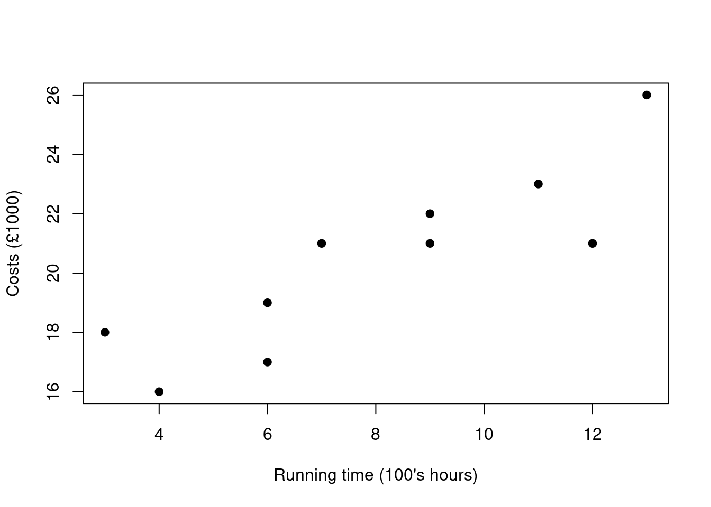
Figure 2.2: Data plot for machines example.
Calculating the summary statistics: \[\sum_{i = 1}^{10}x_{i} = 80; \ \ \bar{x} = 8.0\] \[\sum_{i = 1}^{10}y_{i} = 204; \ \ \bar{y} = 20.4\] \[\sum_{i = 1}^{10}x_{i}^{2} = 742; \ \ \sum_{i = 1}^{10}y_{i}^{2} = 4242; \ \ \sum_{i = 1}^{10}{x_{i}y_{i}} = 1711\]
Hence, \[S_{xx} = 102; \ \ S_{yy} = 80.4 \ \ S_{xy} = 79\]
Our estimates of the regression coefficients are: \[\hat{\beta} = \frac{S_{xy}}{S_{xx}} = 0.775\ \left( to\ 3\ d.p. \right)\] \[\hat{\alpha} = \ \bar{y} - \ \hat{\beta}\bar{x} = 14.204\ \left( to\ 3\ d.p. \right)\]
The ANOVA table contains the following:
Sum of Squares due to Regression = \({\hat{\beta}}^{2}S_{xx} = 61.18627\)
Residual Sum of Squares = \(S_{yy} - 61.18627 = 19.21373\)
Hence, the ANOVA table is:
Our observed statistic is \(61.18627/2.40172 = 25.48\). Is this value of 25.48 large for an \(F_{1,8}\) distribution? \(F_{0.95,1,8} = 5.32\) and \(F_{0.995,1,8} = 14.69\), so our value of 25.48 is highly unusual. We therefore have sufficient evidence to reject \(H_{0}:\beta = 0\) at the 95% confidence level, and hence to conclude there is a significant regression of running costs on hours used. From the ANOVA table, we can read our point estimate of the residual variance, namely: \[{\hat{\sigma}}^{2} = 2.402\ \left( to\ 3\ d.p. \right).\]
2.3.3 Confidence intervals for the coefficients
Assuming we have found evidence of a significant regression between \(x\) and \(y\), we have to date only calculated point estimates of the regression coefficients \(\hat{\alpha}\) and \(\hat{\beta}.\) It is useful to derive confidence intervals for the estimates \(\hat{\alpha}\) and \(\hat{\beta}\) in order to understand the range of values that the real coefficients could take.
The intercept \(\mathbf{\alpha}\)
Recall from section 2.3.2 that \[\hat{\alpha}\sim N\left(\alpha,\ \frac{\sigma^{2}\sum_{i=1}^{n}x_{i}^{2}}{n\times S_{xx}}\right)\]
Hence, a 95% confidence interval for \(\alpha\) is: \[\hat{\alpha} \pm t_{0.975, n - 2}\sqrt{\frac{{\hat{\sigma}}^{2}\sum_{i=1}^{n}x_{i}^{2}}{n\times S_{xx}}}\ \]
where the \(t\)-distribution, rather than the Normal, is used due to the fact that we also need to estimate the \(\sigma\) parameter. In our Example 2.2 in Section 2.3.2, where \(\hat{\alpha} =\) 14.204, a 95% confidence interval for \(\alpha\) is (14.204 \(\pm\) 3.05), i.e (11.154,17.254).
\(\alpha\) can be interpreted as the fixed running costs of the machine per year i.e. the costs of the machine even if it does not run during the year.
The slope \(\mathbf{\beta}\)
Recall from section 2.3.2 that \[\hat{\beta}\sim N\left(\beta,\ \frac{\sigma^{2}}{S_{xx}}\right)\]
Hence, a 95% confidence interval for \(\beta\) is: \[\hat{\beta} \pm t_{0.975,n - 2}\ \sqrt{\frac{{\hat{\sigma}}^{2}}{S_{xx}}}\]
Hence in Example 2.2, where \(\hat{\beta} =\) 0.775, a 95% confidence interval for \(\beta\) is \((0.775 \pm 0.354)\), i.e \((0.421, 1.129)\). Note that this confidence interval does not contain zero, which is consistent with the result of the F-test calculated from the ANOVA table. \(\beta\) can be interpreted as the unit change in running costs per 100 hours.
2.4 Prediction
There are two types of prediction we can make, together with confidence intervals, having fitted our linear regression model.
These are:
the mean value of lots of possible observations at a given value of x, plus the associated confidence interval – sometimes referred to as the confidence interval for the regression line, or confidence interval for the mean
the value of a single observation at a given value of x, with its associated confidence interval – sometimes referred to as the prediction interval
It should be clear that the confidence interval for a single observation (the prediction interval) will be wider than the confidence interval for the mean value (the confidence interval).
2.4.1 Confidence interval for the mean
We can derive a confidence interval for the expected value of \(Y = \ \alpha + \ \beta x\) at a given value of x (\(x_{0}\), say). Let this value be denoted \(\mu_0=E(Y|x=x_0)\), so \[{\hat{\mu}}_{0} = \hat{\alpha} + \hat{\beta}x_{0}\].
Clearly, \(E({\hat{\mu}}_{0}) = \ \alpha + \ \beta x_{0}\), because \(\E(\hat{\alpha}) = \ \alpha\) and \(\E(\hat{\beta}x_{0}) = \ x_{0}\beta\). But \(\Var({\hat{\mu}}_{0})\) is NOT equal to \(\Var(\hat{\alpha})+x_{0}^{2} \Var(\hat{\beta})\) because \(\hat{\alpha}\) and \(\hat{\beta}\) are not independent.
In fact, it can be shown that (although we don’t prove it here): \[\hat{\mu}_{0} \sim N\left(\alpha + \beta x_{0},\sigma^{2}\left( \frac{{(x_{0} - \bar{x})}^{2}}{S_{xx}} + \frac{1}{n} \right)\right)\]
Note that the variance of \({\hat{\mu}}_{0}\) varies with \(x_{0}\): the closer \(x_{0}\) is to \(\bar{x}\), the smaller the variance of the fitted line; the further \(x_{0}\) is from \(\bar{x}\), the larger the variance of the fitted line.
Does this make intuitive sense? Well, consider \(x_{0} =\) \(\bar{x}\): at this value of \(x_{0}\), \[{\hat{\mu}}_{0} = \hat{\alpha} + \hat{\beta}\bar{x}\]
But, if we recall that: \(\hat{\alpha} = \bar{y} - \hat{\beta}\bar{x}\), then \({\hat{\mu}}_{0} = \ \bar{y}\). In other words, the regression line passes through the point \((\bar{x},\bar{y})\). At this point, the variability of \({\hat{\mu}}_{0}\) is the variability of \(\bar{Y}\), which is \(\sigma^{2}/n\), so the term for the variance for \({\hat{\mu}}_{0}\) in the distribution above makes sense.
Note: the fact that the variance of \({\hat{\mu}}_{0}\) increases as \(x_{0} - \bar{x}\) increases, acts as a reminder of the risks of extrapolating outside the range of \(x\) used in the fitting of the model. A 95% confidence interval for \({\hat{\mu}}_{0}\) is therefore: \[(\hat{\alpha} + \hat{\beta}x_{0}) \pm \ t_{0.975, n - 2}\sqrt{{\hat{\sigma}}^{2}\left( \frac{{(x_{0} - \bar{x})}^{2}}{S_{xx}} + \frac{1}{n} \right)} \]
For instance, in the Example 2.2 in Section 2.3.2, \(\bar{x} = 8.\) So, if \(x_{0} = 8\), the 95% confidence interval is: \[(\hat{\alpha} + 8 \hat{\beta})\pm \ t_{0.975, 8}\sqrt{\frac{{\hat{\sigma}}^{2}}{10}}\]
i.e. (19.272,21.536) – an interval which is 2.264 wide. So, if \(x_{0} = 3\), the 95% confidence interval is: \[(\hat{\alpha} + \ 3 \hat{\beta}) \pm \ t_{0.975,8}\sqrt{{\hat{\sigma}}^{2}\left(\frac{25}{S_{xx}} + \frac{1}{10}\right)}\]
i.e. (14.426,18.632) – an interval which is 4.206 wide.
Figure 2.3 shows the 95% confidence interval for the regression line for \(x_{0}\) from 1 to 21.
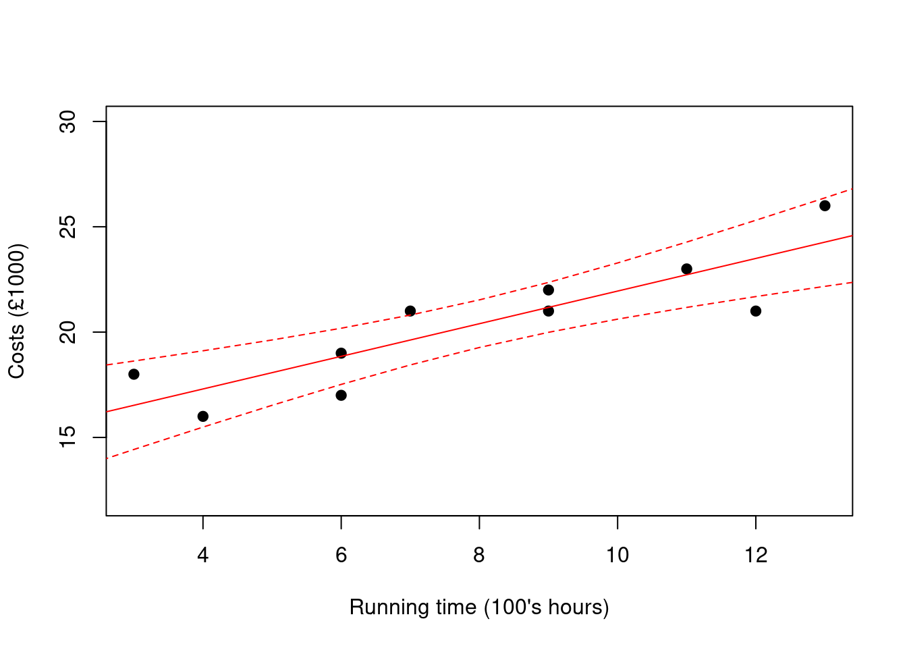
Figure 2.3: Confidence intervals for the regression line for the machines example.
2.4.2 Confidence interval for a single observation
Consider a single new observation at \(x = x_{0}\). We would expect the confidence interval for the observation \(y_{0}\) at \(x = x_{0}\) to be wider than the confidence interval for the emphx{mean} observation at \(x = x_{0}\).
This is because, as we know from previous units, the mean has a smaller variance than a single observation. In fact, the variance of a single observation at \(x = x_{0}\) is equal to the variance of the line at \(x = x_{0}\) plus \(\sigma^{2}\), the variance ``about the line’’. Hence, for a single observation \(y_{0}:\) \[{\hat{y}}_{0} \sim N\left( \alpha + \beta x_{0},\sigma^{2}\left( \frac{{(x_{0} - \bar{x})}^{2}}{S_{xx}} + \frac{1}{n} + 1 \right) \right)\]
Hence, a 95% prediction interval for a new \(y_{0}\) is: \[(\hat{\alpha} + \ \hat{\beta}x_{0}) \pm \ t_{0.975,n - 2}\sqrt{{\hat{\sigma}}^{2}\left( \frac{{(x_{0} - \bar{x})}^{2}}{S_{xx}} + \frac{1}{n} + 1 \right)}\]
In Example 2.2 from Section 2.3.2:
at \(x_{0} = 8\), the prediction interval is (17.832, 22.976)
at \(x_{0} = 3\), the prediction interval is (12.377, 20.681).
In other words, if we have a new observation at \(x_{0} = 3\), we would expect to find 95% of the observations to lie within the interval (12.377,20.681). Figure 2.4 shows the 95% confidence intervals for the line overlaid with the 95% confidence intervals for a single observation (prediction intervals) for values of \(x_{0}\) from 1 to 21.
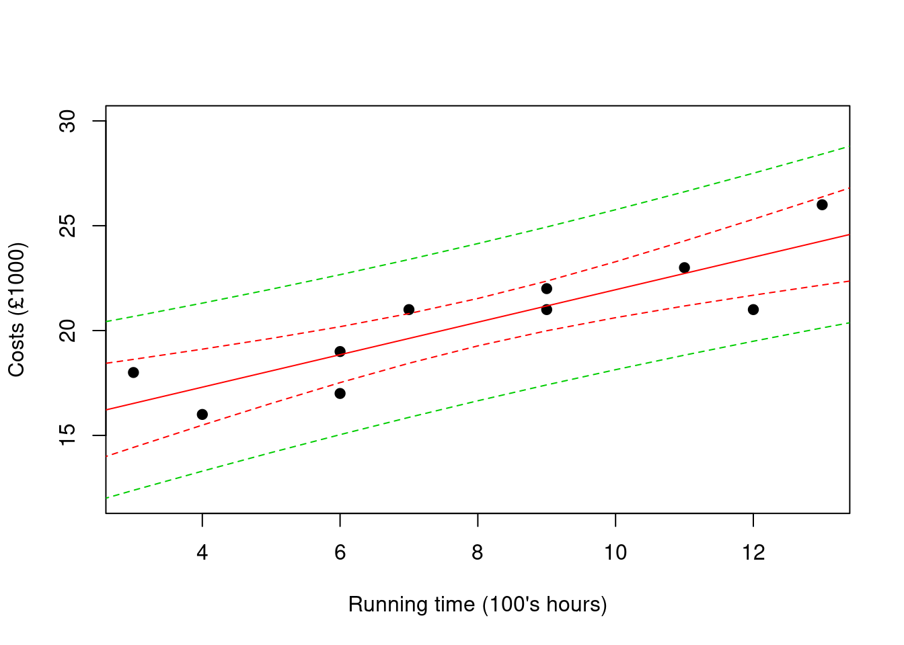
Figure 2.4: Confidence intervals for the regression line and prediction intervals for single observations for the machines example.
2.5 Validating the model
In Section 2.1, we made several assumptions about our observations to enable us to fit a linear regression, namely that the \(\left\{ Y_{i} \right\}_{i=1}^{n}\) are identically independently distributed (i.i.d.) with \(Y_{i}\sim N(\alpha + \beta x_{i},\sigma^{2})\). We therefore need to examine four separate assumptions:
there is a linear relationship between \(\left\{ y_{i} \right\}\) and \(\left\{ x_{i} \right\}\)
the \(\left\{ Y_{i} \right\}\text{\ are\ normally\ distributed}\)
the \(\left\{ Y_{i} \right\}\text{\ have\ constant\ variance}\)
the \(\left\{ Y_{i} \right\}\) are independent
We examine the validity of these assumptions by looking at plots of the residuals \(\left\{ r_{i} \right\}\), where \[r_{i} = y_{i} - {\hat{y}}_{i} = y_{i} - (\hat{\alpha} + \hat{\beta}x_{i})\]
Why do we examine residuals? Well, if \[Y_{i}\sim N(\alpha + \beta x_{i},\sigma^{2}),\]
then \[Y_{i} - (\alpha + \beta x_{i})\sim N(0,\sigma^{2}).\]
If the regression is appropriate, we can expect \(\hat{\alpha}\) to be close to \(\alpha\), \(\hat{\beta}\) to be close to \(\beta\), and hence \(y_{i} - (\hat{\alpha} + \hat{\beta}x_{i})\) to be close to \(y_{i} - (\alpha + \beta x_{i})\). Hence, the residuals should look like \(N\left(0,\sigma^{2} \right)\) random variables. If we knew \(\sigma^{2}\), then the standardised residuals \[r_{i}^{*} = \frac{(y_{i} - {\hat{y}}_{i})}{\sigma}\] would resemble \(N(0,1)\) random variables. Since \(\sigma^{2}\) is not known, we use \[r_{i}^{*} = \frac{(y_{i} - {\hat{y}}_{i})}{\hat{\sigma}}\] where \(\hat{\sigma} = \sqrt{\hat{\sigma}^{2}}\), and \({\hat{\sigma}}^{2}\) is the mean squared error calculated in the regression ANOVA table.
We examine two types of plots – residual plots and normality plots. In either case, we are interested in the general structure or appearance of the plots, rather than their intricate structure.
2.5.1 Residual plots
Ordered Residuals
We can use a plot of ordered residuals – a plot of \(r_{i}^{*}\) against \(i\) – to examine model fit. If any structure is apparent, this will suggest the observations are not independent e.g. they may have a temporal structure.
See Figure 2.5 and 2.6 for examples of non-acceptable and acceptable ordered residual plots.
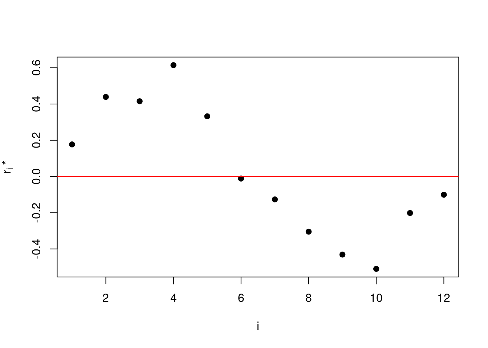
Figure 2.5: Ordered residual plot: clear pattern / structure in residuals – perhaps a temporal model would be more appropriate?
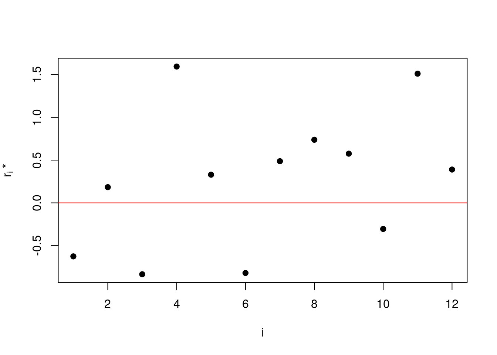
Figure 2.6: Ordered residual plot: no obvious structure – model fit seems OK.
Residuals against Fitted values
Similarly, we can examine a plot of \(r_{i}^{*}\) against the fitted values from the regression, \({\hat{y}}_{i}\). Again, we are hoping for no structure to be apparent: if there is any structure, this can indicate that either the linearity or constant variance assumptions – or both. Figure 2.7 shows an acceptable residual plot, similar to before; a plot like Figure 2.10 may lead you to question the (simple) linear regression model; Figure 2.9 contradicts the constant variance (homoscedasticity) assumption, whereas an outlier as featured in Figure 2.10 may cause concern about data collection integrity.
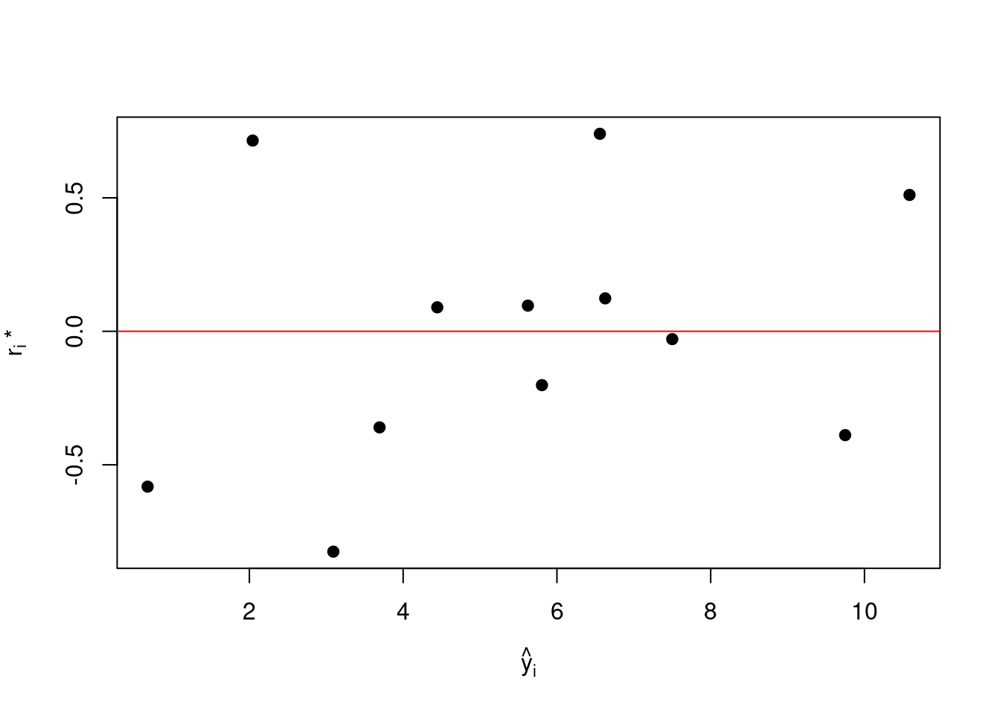
Figure 2.7: Residual plot: no obvious structure – model fit seems OK.
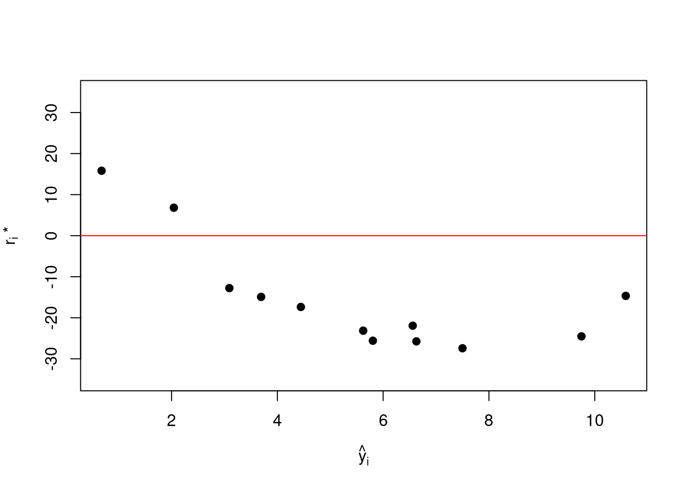
Figure 2.8: Residuals plot: some structure, may suggest regression line of the form \(Y_i=\alpha+\beta x_i+\gamma x_i^2\).
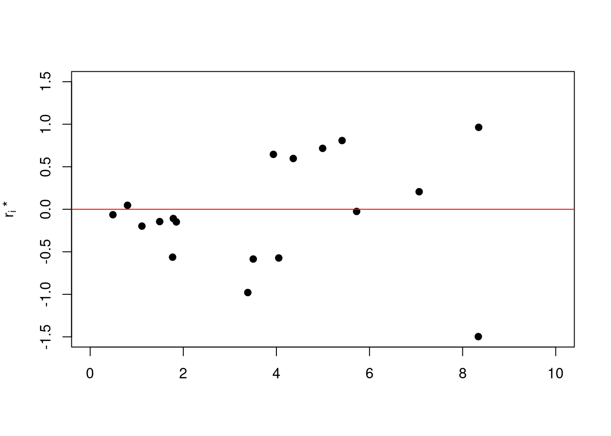
Figure 2.9: Residuals plot: Structure – suggests variance rising with increasing \(Y_i\) – maybe try transforming using \(Z_i=\log(Y_i)\) before fitting regression model.
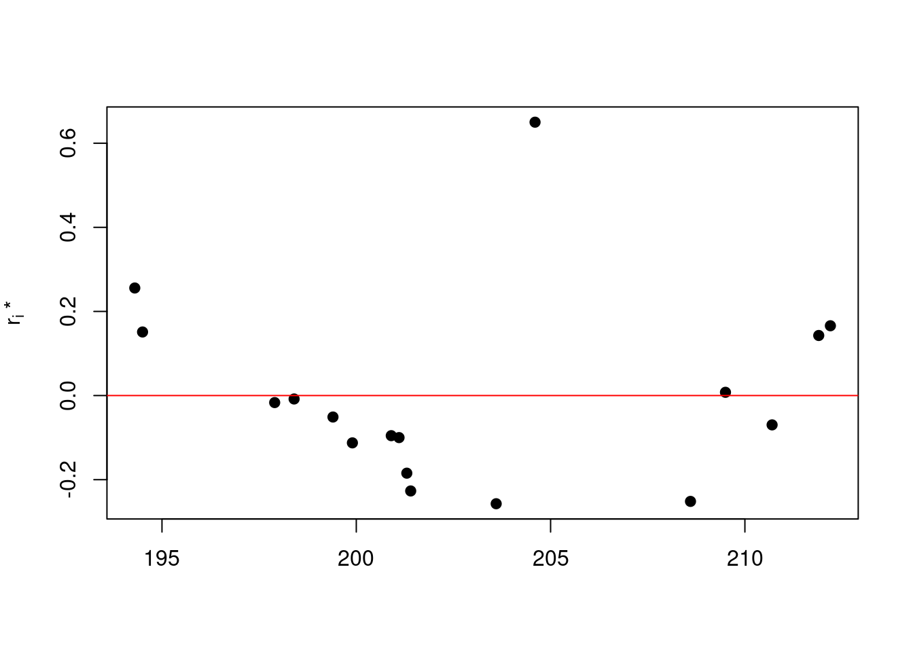
Figure 2.10: Residuals plot: Possible outlier having a significant effect on the fitted regression model. Is this a valid value, or should it be discarded and the model re-fitted?
2.5.2 Normality plots
Normality plots provides clues to whether or not the assumption of normality is valid. If the sample size is large enough, the very first illustration of normality or non-normality is the histogram of residuals. The shape of the histogram should resemble the bell-shape of the normal curve, although this is difficult to see with small sample sizes.
In addition, the ordered standardised residuals \(\{r_{i}^{*}\}\) are plotted against the \(n\) different \(\alpha\) points (not to be confused with the \(\alpha\) in the regression equation!) of the \(N(0,1)\) distribution, with \[\alpha = \ \frac{1}{(n + 1)},\frac{2}{(n + 1)},\ldots,\frac{n}{n + 1}\]
This is known as a QQ (quantile-quantile) plot. If the normality assumption is valid, we should see an approximate straight line.
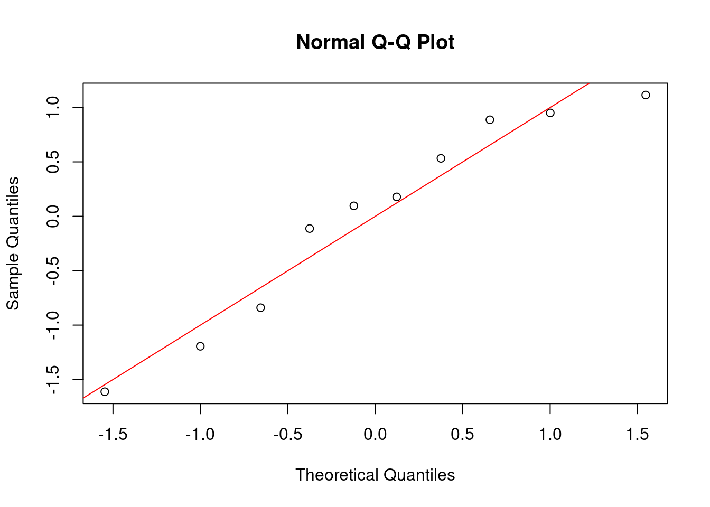
Figure 2.11: QQ plot from the machine example.
2.5.3 Estimating Coefficients and Model Validation Using R
We can use software such as to estimate \(\hat{\alpha}\) and
\(\hat{\beta}\), allowing us to concentrate on interpreting the results.
In ,, the main way of calculating the regression line is with the in-built function lm (linear model).
Of course it is also possible to write custom formulae to carry out each of the individual calculations in Section 2.
2.5.3.1 The lm function
For the machines example, Example 2.2, we can regress the machine costs on the machine runtime. These variables are contained in the machines data.frame.
After loading the dataset, we use the formula
will create a linear model regressing costs on runtime; the ~ symbol indicates the formula for the regression (we will use more complicated formulae in Chapter 3 when we look at multiple linear regression). The object contains a number of useful variables associated to the linear model:
## [1] "coefficients" "residuals" "effects" "rank"
## [5] "fitted.values" "assign" "qr" "df.residual"
## [9] "xlevels" "call" "terms" "model"We will look at some of these in the coming sections. The most important of these is the coefficients component of the lm object, containing the regression intercept and slope, \(\alpha\) and \(\beta\) respectively. These can be accessed by
## (Intercept) runtime
## 14.2039216 0.7745098## (Intercept) runtime
## 14.2039216 0.7745098Note that, as expected, these coincide with the calculated values from Example 2.2.
2.5.3.2 Visualising a regression
The coefficients from the lm object can be used to add a trend line to a plot of data. Continuing with the machines data, we can use the abline function to add the regression line to the plot:
machlm = lm(costs~runtime, data = machines)
plot(machines$runtime, machines$costs, xlab = "Running time (100's hours)",
ylab = "Costs (£1000)", pch=19)
abline(machlm$coefficients, col = "red")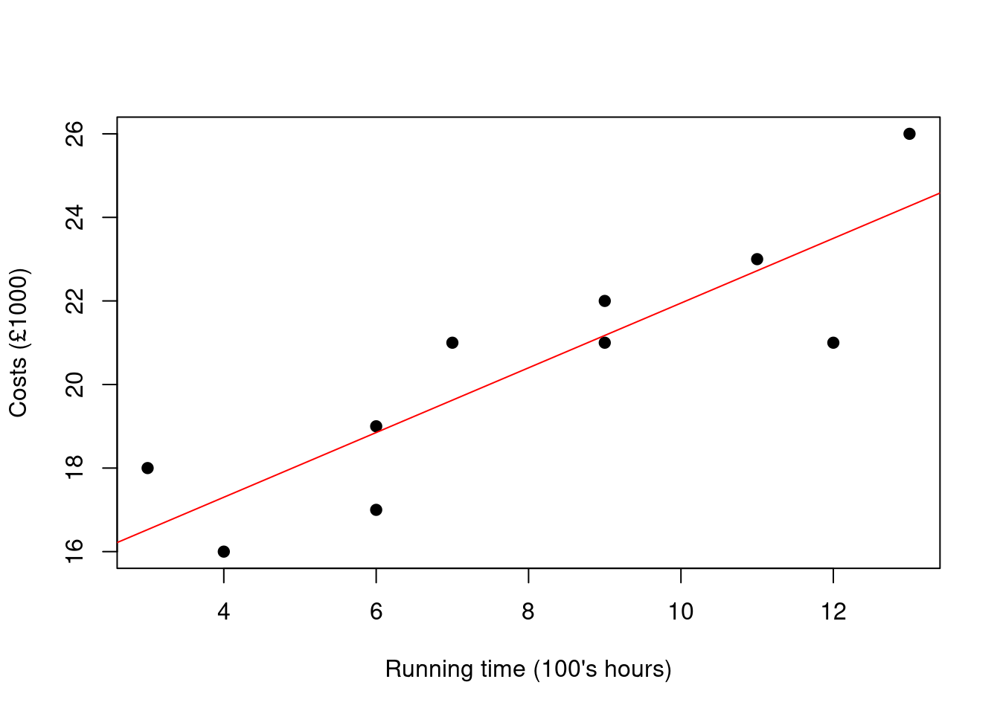
Figure 2.12: dataset with estimated regression line.
2.5.4 Formulae for Simple Linear Regression
In several workshops, we will illustrate how formulae and functions can be used to build up a comprehensive suite of calculations useful for the various linear regression calculations.
Simple Linear Regression with Zero Intercept
In some instances, it can seem intuitively reasonable to force the parameter \(\alpha\) of the intercept to be zero e.g. if the value of \(y\) should equal zero when \(x\) equals zero.
For example, if \(\{ Y_{i}\}_{i = 1}^{n}\) are the number of orders from a mail-shot, and \(\{ x_{i}\}_{i = 1}^{n}\) the number of mail-shots posted, if \(x = 0\) then \(y = 0\) also.
Most software packages, including , provide the option to set the intercept term to zero. However, there are few cases in linear regression where a zero intercept can be justified.
To use a zero intercept you need to:
have a good reason for assuming that \(y = 0\) when \(x = 0\)
have a good reason to assume that the same linear relationship exists around \(x = 0\) and for other values of \(x\)
Example 2.3 (Mail-shot data) Consider the following data.
\(\{y_{i}\}_{i = 1}^{10}\) are the number of orders from a mail-shot, and \(\{x_{i}\}_{i = 1}^{n}\) the number of mail-shots posted (in thousands):
The data plot in Figure 2.13 indicates a linear relationship is appropriate.
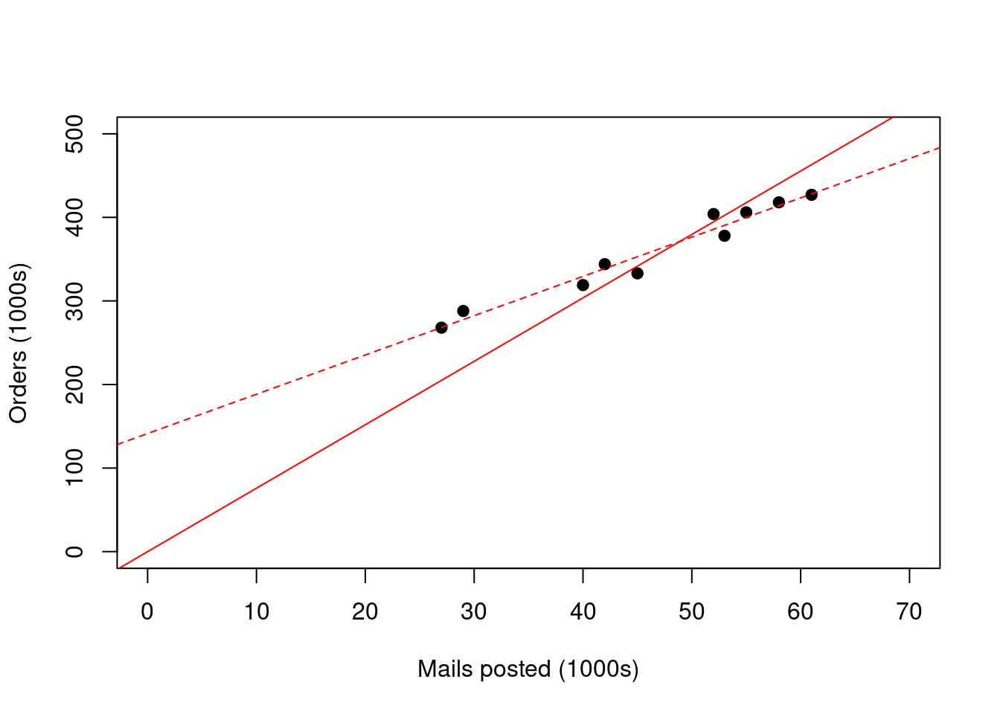
Figure 2.13: Regression lines for data with intercept equal to zero (solid line) and with unconstrained intercept (dashed line).
If we fit linear regressions with an unconstrained intercept (dashed line in Figure 2.13) and also with a zero intercept (solid line) we see a much better fit with an unconstrained intercept.
With an unconstrained intercept \(\sum_{i = 1}^{10}({\hat{y}}_{i} - y_{i})^{2} = 1179\);
if the intercept is zero, \(\sum_{i = 1}^{10}({\hat{y}}_{i} - y_{i})^{2} = 12129\)!
Clearly, over the range of \(\left\{ x_{i} \right\}\) we have available to us, using an intercept gives a better fit to our data.
Recall also that from Section 2.3.2, the estimate \({\hat{\sigma}}^{2}\) for \(\sigma^{2}\)is given by \[{\hat{\sigma}}^{2} = \ \frac{1}{n - 2}\sum_{i = 1}^{n}\left( y_{i} - {\hat{y}}_{i} \right)^{2}\]
and that \[\hat{\beta}\sim N \left(\beta,\ \frac{\sigma^{2}}{S\left( x,x \right)} \right)\]
In other words, the standard error of the slope parameter \(\beta\) is proportional to \(\sum_{i = 1}^{n}\left( y_{i} - {\hat{y}}_{i} \right)^{2}\). So, not only is the fit (as measured by \(\sum_{i = 1}^{n}\left( y_{i} - {\hat{y}}_{i} \right)^{2}\) ) worsened by restraining to a zero intercept, it also reduces our ability to reject the null hypothesis \(H_{0}:\beta = 0\), and hence showing the regression is significant.
In this particular instance, it may be that the response rate is higher if \(x_{i}\) is less than 270,000 (the lowest value of our observed \(x_{i}\) ) e.g. because the company chooses its potentially most responsive customers first. If we were to include lower values of \(x_{i}\), a linear regression would then not be appropriate without a transformation.
If we do constrain to a zero intercept, we find the value of \(\hat{\beta}\) which minimises the sum of squares as follows:
With a zero intercept, \(\alpha = 0,\) so \[S(\beta) = \ \sum_{i = 1}^{n}{(y_{i} - \beta x_{i})^{2}}\]
\[\frac{\partial S}{\partial\beta} = \ \sum_{i = 1}^{n}{2(y_{i} - \beta x_{i})\ {( - x_{i})}^{}}\]
which equals 0 when \[\sum_{i = 1}^{n}{x_{i}y_{i}} - \ \beta\sum_{i = 1}^{n}{x_{i}^{2} = 0.}\]
i.e \[\hat{\beta} = \frac{\sum_{i = 1}^{n}{x_{i}y_{i}}}{\sum_{i = 1}^{n}x_{i}^{2}}\]
We will not consider confidence intervals for \(\beta\) nor the appropriate test of significance for zero-intercept regression in this course.